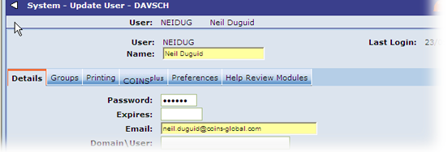

Users
The 'owners' of repeat invoices (in other words, the user responsible for them) should be set up such that they will receive emails when a new set of invoices is generated.
To do this, enter an email address for the User ID in Users as shown in the sample screen below.
